Jaarverslag 2025
Hierbij treft u aan onze jaarrekening 2025 en ons kwaliteit-jaarverslag 2025.
Home › Nieuws
NieuwsGroepen die openen, mensen die het verschil maken en momenten die blijven hangen. Blijf op de hoogte van het laatste nieuws.
Het volledige nieuwsarchief van ZON, van de oprichting in 2013 tot nu — nieuwste eerst.
Hierbij treft u aan onze jaarrekening 2025 en ons kwaliteit-jaarverslag 2025.
Hierbij treft u aan onze jaarrekening 2024 en ons kwaliteit-jaarverslag 2024.
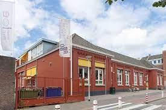
Na de zomervakantie zal stichting ZON een 4de groep openen op basisschool de Krabbenkooi in Bergen op Zoom.
Op deze groep worden kinderen van 1 t/m 13 jaar opgevangen met een ontwikkelingsachterstand en (kenmerken van) autisme. Een mooie stap om nog meer kinderen met een beperking naar school te laten gaan en samen met de kinderen van de basisschool plezier te laten hebben!
Hierbij treft u aan onze jaarrekening 2022 en ons kwaliteit-jaarverslag.
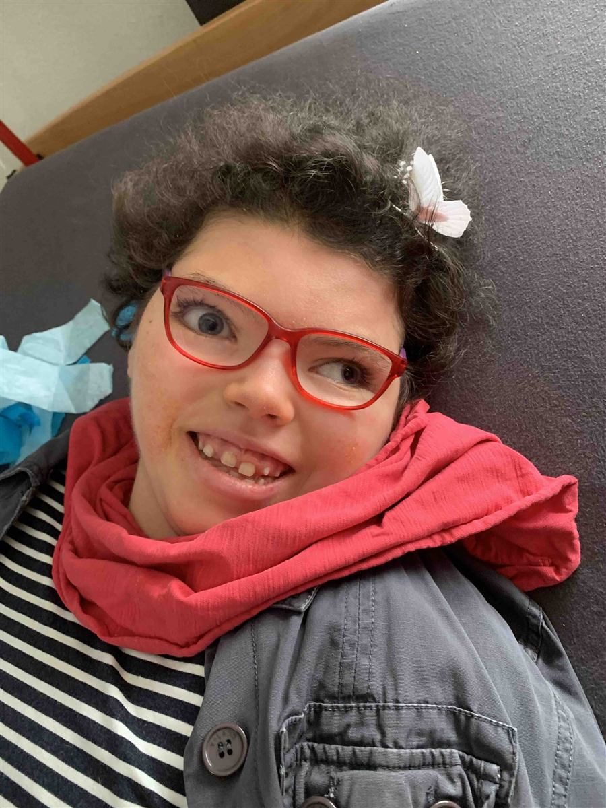
Op zaterdag 17 december is op 18-jarige leeftijd heel rustig Nienke, de dochter van Jeroen en Mirjam, overleden.
Zij was de reden waarom destijds stichting Zorg en Onderwijs Nu is opgericht. Nienke is als 6-jarig meisje naar de basisschool op het dorp gegaan om te proberen. Het plezier dat het naar school gaan haar bracht en het samen spelen met kinderen, leeftijdsgenoten, het was een feestje. Op deze manier mocht ze in de maatschappij blijven staan en haar gezin ook.
Nienke hoorde erbij. Dit gunden we veel meer kinderen en zo ontstond Stichting Zorg en Onderwijs Nu.
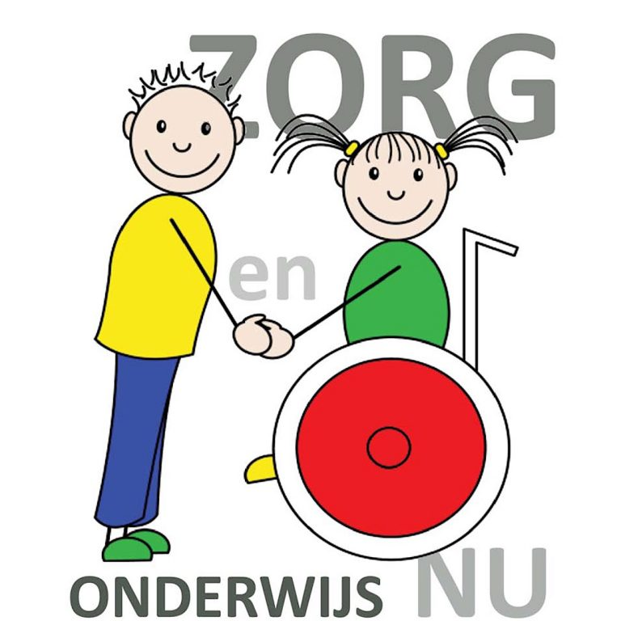
Bekijk hier ons introductiefilmpje: bekijk de video op YouTube ↗
Meer informatie over 'Wie wij zijn' leest u hier.
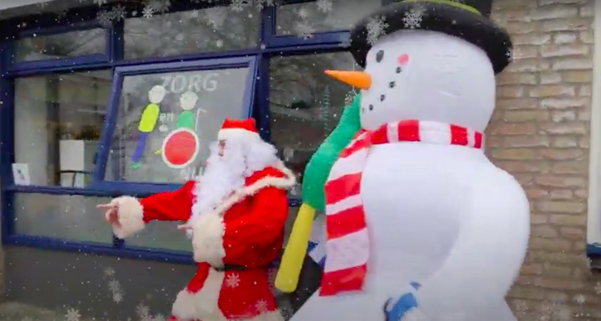
Onze derde vestiging School Oost heeft een wel heel leuke manier gevonden om iedereen hele fijne feestdagen te wensen!
En uiteraard wordt in het filmpje de kerstgroet ook gegeven vanuit het lokaal van ZON (tijdstip 3:11). Bekijk de video op YouTube ↗
Wij zoeken voor onze Stichting Zorg en Onderwijs Nu (ZON) een enthousiaste, nieuwe bestuurscollega, die samen met ons team de schouders wil zetten onder het verder ontwikkelen van onze prachtige stichting.
ZON is een ambitieuze stichting die ontwikkelingsgerichte dagbesteding biedt aan kinderen met een lichamelijke en een verstandelijke beperking. We doen dat in reguliere basisscholen in West Brabant.
We vinden ontwikkeling belangrijk. Alle kinderen hebben recht op ontwikkeling in hun eigen tempo en binnen hun eigen mogelijkheden. Onze locaties zijn juist in reguliere basisscholen, omdat we geloven in inclusie en vinden dat alle kinderen, met en zonder beperking, met elkaar plezier moeten kunnen hebben en van elkaar kunnen leren. Ons motto is dan ook:
"Een school die leert dat niemand wordt buitengesloten, bereidt voor op een samenleving waarin iedereen meetelt!"
In de afgelopen jaren hebben we als stichting hard aan de weg getimmerd. Inmiddels bestaat ZON uit drie groepen in Bergen op Zoom en Halsteren. We zijn echter nog lang niet klaar en hebben tal van ambities waaronder het realiseren van een groep op een middelbare school. Om met ons die ambities te verwezenlijken willen we graag ons team van bestuursleden uitbreiden.
Als bestuur van ZON bepalen we samen in hoofdlijnen het beleid van ZON, zorgen we voor de uitvoering en/of houden daarop toezicht. De dagelijkse leiding van ZON en haar medewerkers wordt gedaan door onze voorzitter Mirjam.
Wij zoeken een bestuurscollega met een specifieke deskundigheid en/of ervaring. Dat kan zijn Onderwijs, Kwaliteitszorg (op het gebied van gehandicaptenzorg) en/of rechten.
Belangrijk is dat je:
Heb je interesse en wil je graag meer weten over onze stichting of over hoe het is om bestuurslid van ZON te zijn neem dan contact met ons op. Doe dat via info@zorgonderwijsnu.nl of bel Mirjam, voorzitter van Stichting ZON, op 06 38 79 54 83. Een verklaring omtrent het gedrag, een zogenaamd VOG, is een vereiste om bestuurslid bij Stichting ZON te kunnen zijn.
Mirjam, Boukje, Rene, Jeroen en Marco
Bestuur Stichting Zorg en Onderwijs Nu
Hierbij treft u aan onze Jaarrekening 2020 en ons verantwoordingsformulier.
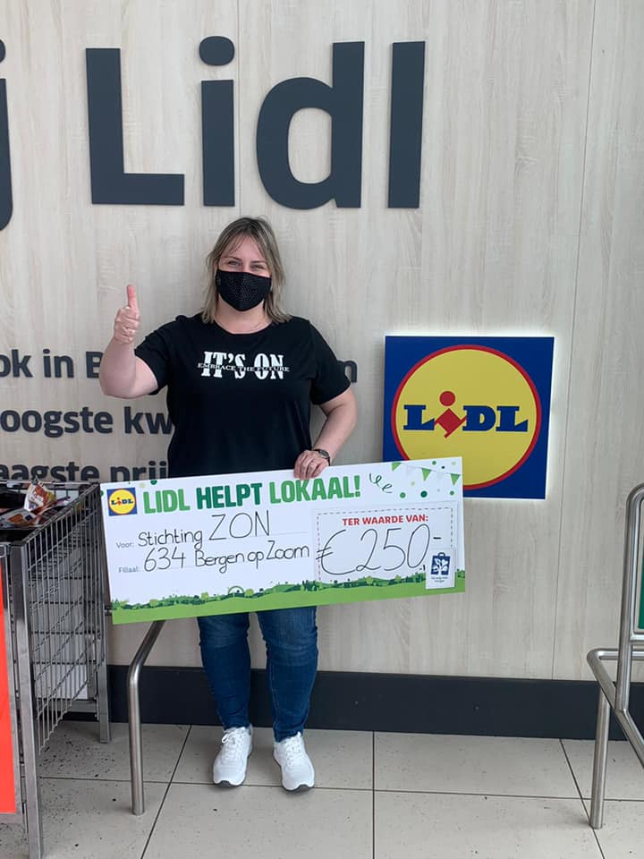
Wat een onwijs mooie dagen zijn dit. Jazeker het weer wordt beter! Maar dit is nog veel mooier! Vragen kan altijd, dacht Jolanda, de moeder van Timo. 'Nee heb ik ja kan ik krijgen'.
En wat voor een mooie ja heeft Jolanda gekregen van de Lidl Nederland.
Een cheque van €250 voor het aanschaffen van speelgoed en snoezelmateriaal. Dat wat bij de ontwikkeling van de ZON-kindjes past.
Dank je wel Jolanda en Lidl voor het nog meer laten stralen van onze zonnetjes ☀️
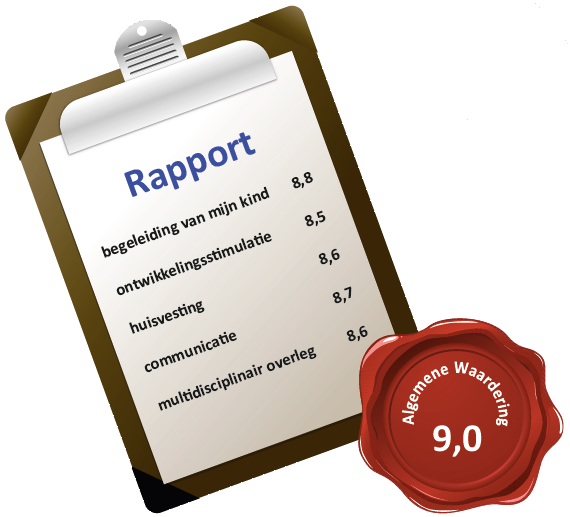
Om goed te begrijpen hoe ouders van de cliënten de zorgverlening van de Stichting Zorg en Onderwijs Nu beleven, is in het schooljaar 2020/2021 voor de vijfde maal een klant-tevredenheidsonderzoek gehouden. Doordat bijna alle ouders het onderzoek hebben ingevuld, hebben we een representatief beeld gekregen van de kwaliteit van de zorg: wat gewaardeerd wordt en waar verdere optimalisatie mogelijk is. Totaal werd op 40 indicatoren gemeten. Via bijgevoegd overzicht willen we enkele resultaten delen.
Neem gerust contact op als u meer wilt weten of het hele klanttevredenheidsonderzoek wilt inzien.
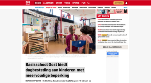
Op 15 februari openen we op Basisschool Oost onze derde locatie. Op 5 februari 2021 verscheen in BN de Stem daarover dit artikel: lees het artikel op bndestem.nl ↗
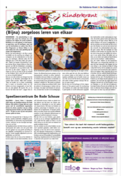
Op Speelleercentrum De Rode Schouw wordt in samenspraak met de ouders voor een groot deel de basis gelegd voor een goede opvoeding en een degelijke voorbereiding op succesvol onderwijs, zoveel mogelijk afgestemd op de mogelijkheden van het kind. Op 13 januari 2021 verscheen een leuk artikel hierover in De Zuidwestkrant van Halsteren.
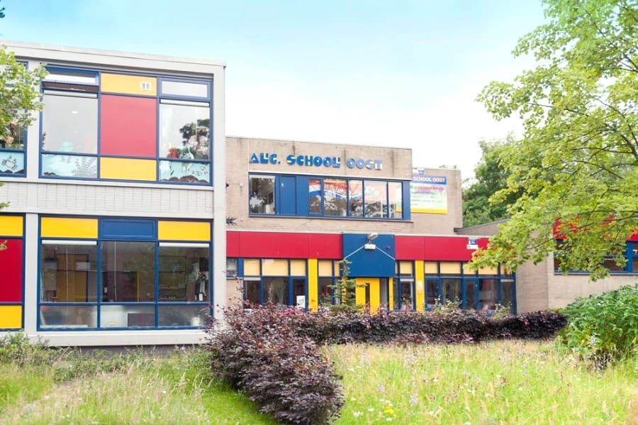
In Februari opent Stichting ZON haar derde groep. Deze groep heeft als specialisatie kinderen van 0 tot 13 jaar met Autisme en een verstandelijke beperking. Samen met school Oost, Kinderopvang Mamaloe en stichting ZON is er een mooie samenwerking op komst waarbij kinderen met en zonder beperking elkaar ontmoeten en leren kennen.
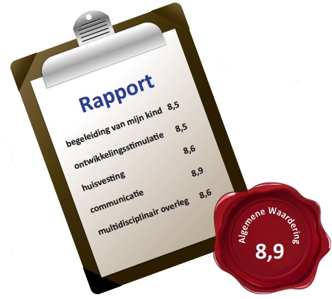
Om goed te begrijpen hoe ouders van de cliënten de zorgverlening van de Stichting Zorg en Onderwijs Nu beleven, is in het schooljaar 2019/2020 voor de vierde maal een klant-tevredenheidsonderzoek gehouden. Doordat bijna alle ouders het onderzoek hebben ingevuld, hebben we een representatief beeld gekregen van de kwaliteit van de zorg: wat gewaardeerd wordt en waar verdere optimalisatie mogelijk is. Via dit overzicht willen we enkele resultaten delen.
Neem gerust contact op als u meer wilt weten of het hele klanttevredenheidsonderzoek wilt inzien.
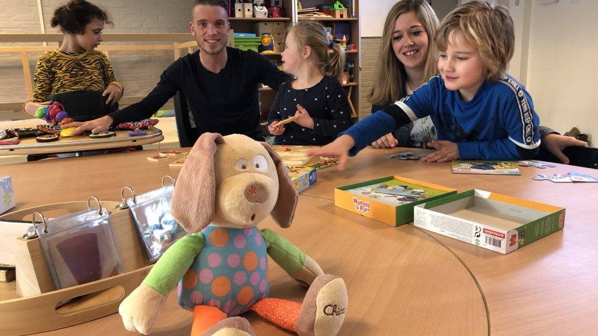
Bron: Hart van Nederland
De Tweede Kamer wil dat de 'Samen naar School-klassen' officieel worden erkend als onderwijsprogramma. Dinsdagmiddag stemde een meerderheid voor een voorstel van Peter Kwint (SP) en Lisa Westerveld (GroenLinks).
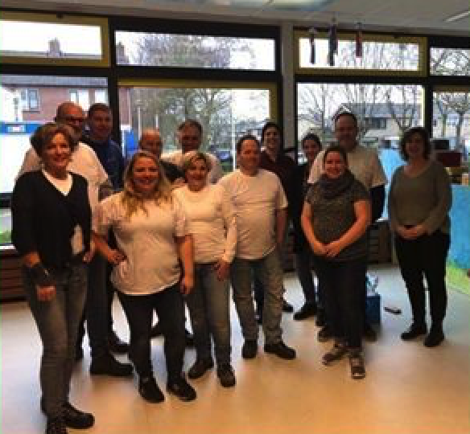
Op 28 februari was het Sabic-dag.
Wij willen heel graag 'SABIC Volunteers Bergen op Zoom' bedanken voor hun inzet vandaag op de ZON-groep in de basisschool Rode Schouw. Na de prachtige 'finishing touch' werd het een mooie metamorfose van het lokaal.
We zijn onder de indruk en dankbaar.
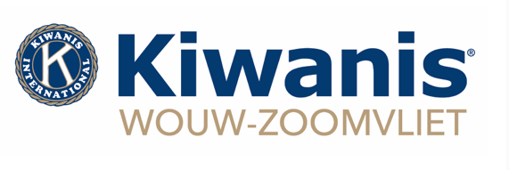
Wij zijn verheugd dat Kiwanis Wouw-Zoomvliet heeft uitgesproken dat het jaar 2020 voor hen in het teken staat van Stichting ZON. Wij verwelkomen Kiwanis daarom graag als onze nieuwe vriend (zie: vriendenpagina).
Kiwanis is een wereldwijde organisatie van vrijwilligers die zich inzet voor het verbeteren van de wereld, kind per kind en gemeenschap per gemeenschap. Het motto van Kiwanis is "serving the children of the world". Op vele manieren dragen de vrijwilligers van Kiwanis bij aan het welzijn en de ontwikkeling van kinderen.
Onder het motto "Serving the Children of the World" streven de Kiwanis clubs naar de uitvoering van effectieve humanitaire acties met zowel sociale als culturele doelen. Hierbij hebben bij Kiwanis van oudsher doelen voor kinderen de voorkeur. De drie belangrijkste pijlers waarop Kiwanis-leden aan het motto invulling geven zijn: 'Fun, Friendship and Fundraising'.
Wij zijn blij dat Kiwanis het als ambitie heeft om onze doelstellingen waar te maken.
Voor meer informatie over Kiwanis kunt u terecht op hun website ↗.
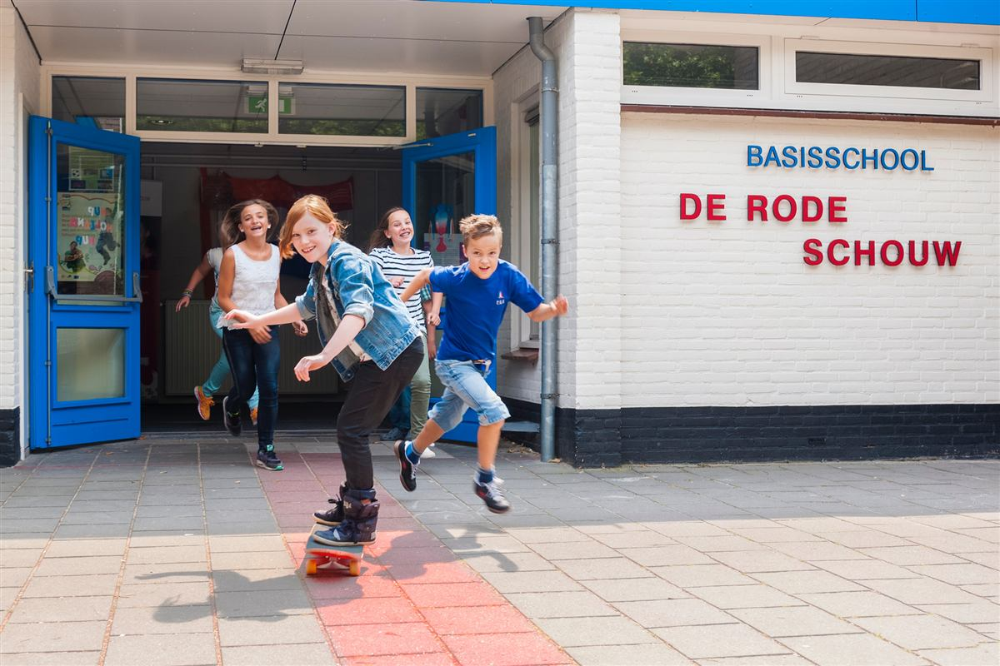
In het oktober zal stichting ZON een tweede groep starten op basisschool de Rode Schouw in Halsteren.
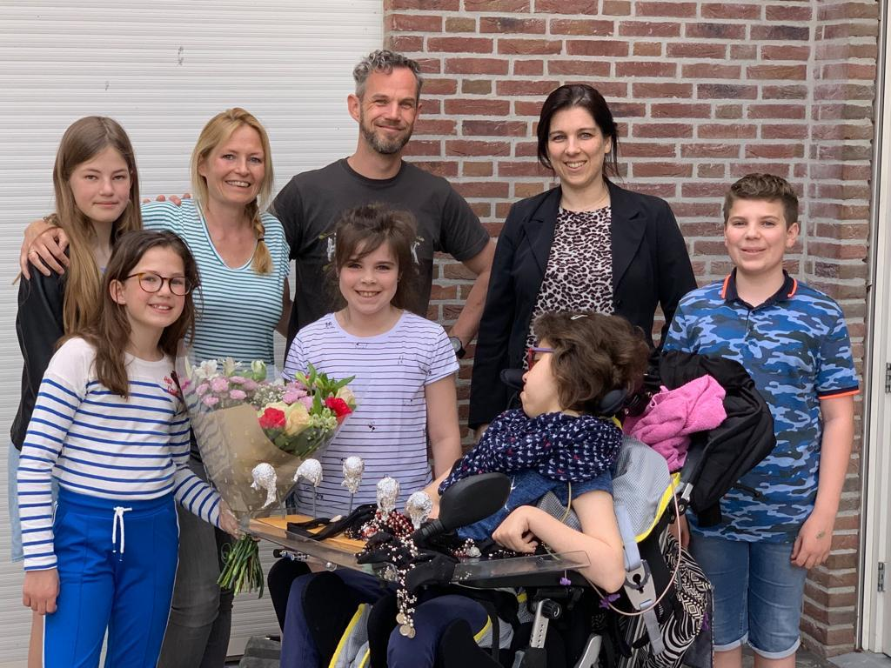
Bij de Jumbo Paul Lucius in Hoogerheide kan er met Pasen worden gezocht naar een gouden ei. Het ei wordt gevonden. Wat er dan gebeurt lees je snel verder.
Vanavond wordt er aangebeld door Lente bij Maartje om haar iets te vertellen. Lente heeft samen met haar papa, mama en zus het gouden ei gevonden bij de Jumbo. Dit gouden ei stond voor 1 minuut gratis winkelen. Je leest het goed, er staat "stond". De papa van Lente is naar de Jumbo gegaan en heeft gevraagd of ze de waarde van de eventuele boodschappen ook in geld mocht ontvangen. Als gezin hebben ze besloten om te vragen of dat een mogelijkheid was; ze wilde graag het geld schenken aan een goed doel. De Jumbo vertelde de papa van Lente: we kunnen ervoor zorgen dat jullie niet hoeven te winkelen. De waarde van de boodschappen is €250,00. Dit willen we jullie geven voor jullie goede doel.
Dat kwam Lente bij Maartje brengen, voor ons, Zorg en Onderwijs Nu. Lieve Lente, Sterre, Paul, Bianca, dank jullie wel voor dit hele mooie gebaar. En Jumbo Paul Lucius uit Hoogerheide, dank jullie wel voor het inspelen op deze vraag en het mogelijk maken hiervan. Lente en Sterre gaan van het geld nieuw speelgoed kopen voor de nieuwe ZON-groep.
Zodra het speelgoed gekocht is delen wij dit met jullie!
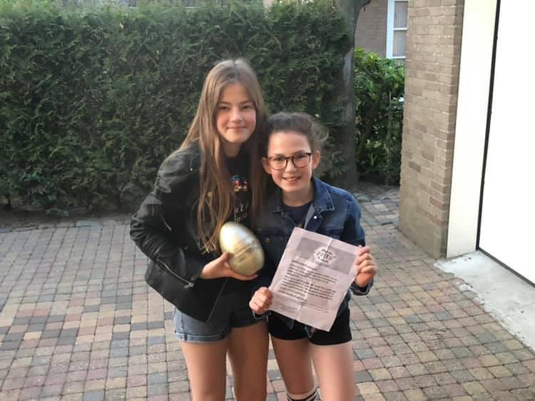
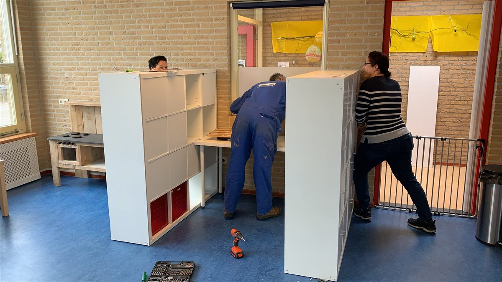
Hoe zorg je ervoor dat de 2 lokalen van de ZON-groep in een weekend leeg zijn en in datzelfde weekend 2 nieuwe lokalen helemaal ingericht worden. Zodat op maandag onze zonnetjes in de nieuwe lokalen ontvangen kunnen worden.
Eerst gaan de complimenten naar Danielle, Marjorie, Jack, Henk, Christel, en Mirjam. Zij hebben ervoor gezorgd dat alle voorbereidingen voor het weekend waren gedaan. En dan is het misschien een beetje spannend om te zien hoeveel helpende handjes er komen.
Eindelijk was het zover, zaterdagmorgen 16 maart 8.30 uur. Met een grote groep gingen we aan de slag, variërend van ouders van onze zonnetjes, medewerkers, vrienden en bekenden en het bestuur. De lokalen werden leeggehaald. Bedden, box, kasten en snoezelhoek werden uit elkaar gehaald en weer in elkaar gezet. Er werd voor koffie, thee en broodjes gezorgd. Er was heel veel lol, mannen die lachten om deuren in kasten die niet klopten of toch wel? In onze nieuwe lokalen werd er geboord, camera's opgehangen en alles op z'n plek gezet. Kasten schoongemaakt en ingeruimd. De nieuwe lokalen gaan steeds meer ZON uitstralen en de zon ging schijnen, van buiten helemaal in de lokalen.
SAMEN dat is wat er gebeurd is deze dagen. SAMEN hebben we dit gedaan. SAMEN hebben we gesjouwd, SAMEN hebben we gelachen, SAMEN is er voorbereid en SAMEN wordt er afgerond. Want op het moment dat deze blog wordt geschreven, worden de laatste dingen in de lokalen gedaan. Want morgen mogen onze zonnetjes SAMEN met de andere kindjes van de Kreek weer naar school. Daar gaat het om: SAMEN is alles leuker en wordt alles wat makkelijker.
SAMEN staat ook voor: veel handen maken licht werk. Dank je wel dat je ons geholpen hebt met verhuizen en het gereed maken van de nieuwe ZON-lokalen: DELU BOUW (Demion en collega's), Rien, Toon, Dusan, Bianca, Henk, Jeffrey, Rob, Fred, Eric, Danielle, Marjorie, Jack, Christel, Mirjam, Marco, Tina, Edwin, Boukje.
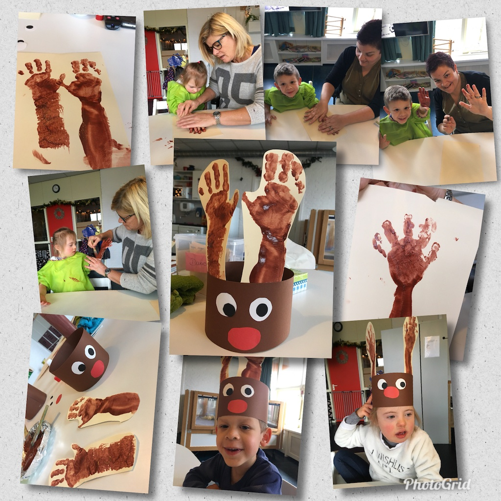
De huidige ZON-groep raakt voller. Hierdoor zijn we aan het kijken naar een tweede locatie.
Graag willen we elk kind zijn/haar aandacht en kwalitatieve ondersteuning kunnen bieden. Dit betekent dat er maximaal 5 à 6 kinderen op de groep zijn per dagdeel. De kinderen van de ZON-groep hebben een variërende zorgvraag en leeftijd. Ieder geniet op zijn/haar niveau.
Ontwikkelingssprongen worden gemaakt op het vlak van motoriek, eten en drinken, en communicatie. Bent u nieuwsgierig naar wat dit voor uw kind zou kunnen betekenen en/of overweegt u uw kind midden in de maatschappij te laten ontwikkelen en verzorgen, neem dan gerust even contact met ons op!
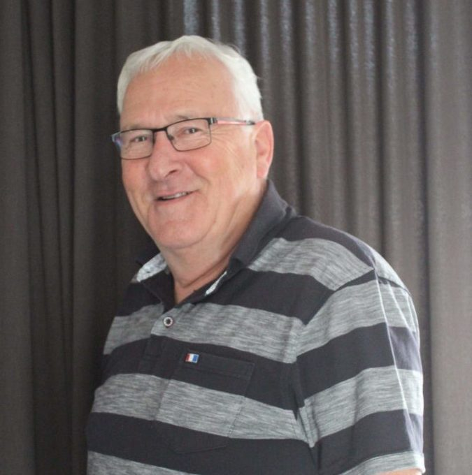
Dank je wel Pim,
Soms zijn er momenten waarvan je weet dat ze komen gaan. Al hoop je stiekem dat dit nog even duurt. En toch komen die momenten sneller dan verwacht. Zo ook met dit moment. Maandag 7 december hebben we afscheid genomen van Pim Meeuwise als vrijwilliger.
Vanaf het moment dat Pim betrokken is geraakt bij Stichting Zorg Onderwijs Nu heeft hij zich met alle liefde en plezier ingezet voor de zonnetjes van onze kinderen. Het maakte Pim niet uit of het ging om kadootjes inpakken bij de Intratuin, vroeg op de goede doelenmarkt met Koningsdag staan, teamontwikkeling of meedenken over de toekomst van ZON. Gaf je Pim een collectebus, dan kwam deze altijd goed gevuld terug. Pim heeft dit altijd met veel plezier gedaan. En wij, de gehele stichting Zorg Onderwijs Nu, hebben genoten van Pim. Want Pim straalt als hij ergens in gelooft, kan lachen om mooie en grappige momenten en komt op de juiste momenten met advies of oplossingen.
Dank je wel Pim voor je inzet en het plezier waarmee jij je hebt ingezet voor ons. We vinden het jammer dat je gestopt bent. We begrijpen je keuze waarom je besloten hebt om te stoppen. We gaan je missen en stiekem hoopten we dat dit moment minder snel zou komen.
Pim we wensen je al het goeds. Niet alleen voor jou, ook voor je vrouw en je familie. We gaan elkaar zeker nog zien.
Pim, dank je wel!
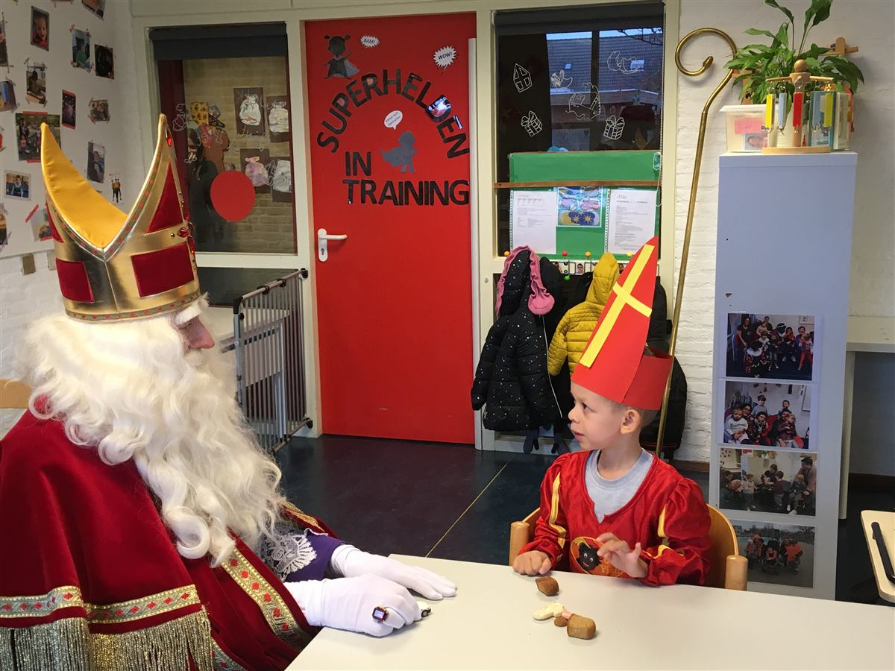
Op 5 december bracht de sint samen met zijn pieten een bezoek aan de ZON-groep. We zaten met z'n allen aan tafel liedjes te zingen toen er eerst 2 zwarte pieten binnenkwamen, spannend, maar ook leuk!
De zwarte pieten maakten met iedereen contact en gaven ieder wat lekkers, daarna kwam ook Sinterklaas binnen… dat was toch wel even heel spannend voor een aantal zonnetjes… maar de sint nam ruim de tijd om onze kinderen te laten wennen en gaf iedereen veel persoonlijke aandacht!
Met Alex ruilde hij zelfs van mijter: Alex die van de sint op, en de sint de geknutselde mijter van Alex. De zwarte pieten hadden gezien dat wij niet alleen sinterklaasliedjes zongen maar er ook gebaren bij maakten, dat wilden ze ook graag leren, samen zongen we Sinterklaas kapoentje.
Natuurlijk waren al onze kinderen hartstikke lief geweest en kreeg iedereen een mooi cadeautje, de pieten hielpen met uitpakken en toen was het tijd voor de sint en zwarte pieten om door te gaan naar de volgende klas, maar niet voordat wij heel hard zongen: Dag Sinterklaasje daaag, daaaag, daaaag zwarte piet!
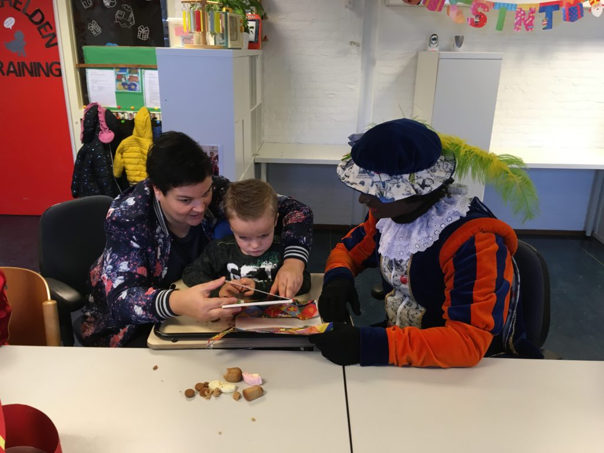
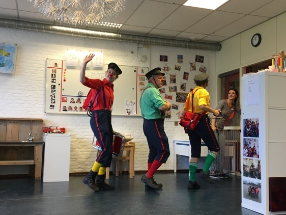
Op maandag 15 oktober j.l. zaten we klaar in een halve kring voor een bezoek van de cliniclowns aan de Zon-groep.
Spannend… hoorden we daar nu iets?… ja hoor, een fietsbel!
We keken allemaal vol verwachting naar de deur en toen zagen we ze binnenkomen; Fiep, Bums en Mus, en ze waren op de fiets!
Iedereen werd bij naam begroet met een liedje, de sfeer zat er gelijk goed in. We mochten helpen met de post sorteren, ieder op zijn of haar eigen manier, zo fijn!
Wat zaten er veel verrassingen in de post: een verjaardagslinger, een heel lief knuffelkipje en een schitterende gele doek waar je mee kon wapperen.
Tot slot hebben we nog gedanst en toen was het helaas alweer tijd om op de fiets te stappen en er vandoor te gaan…
Tot de volgende keer lieve cliniclowns, zien we jullie snel weer?
Op 12 oktober j.l. mochten alle ZON-kinderen met hun ouders, broers en zussen, alle ZON-medewerkers en vrijwilligers op uitnodiging van Loes, medewerkster van de Efteling, een avond genieten van de gastvrijheid en alle leuke, mooie en stoere attracties.
Speciaal voor ons en andere bijzondere doelgroepen was de Efteling deze avond open! We mochten in alle attracties, genoten van de sfeer, mochten gebruikmaken van alle horeca en kregen zelfs een foto mee naar huis.
Wat was het genieten, geen lange rijen, alles beleven in het donker waardoor de lichtjes nog mooier uitkwamen, de snelle achtbanen, de mooie Droomvlucht of het altijd leuke Carnaval Festival, voor iedereen was er meer dan genoeg leuks te beleven!
Het was een hele fijne avond uit waarvan we allemaal enorm genoten hebben en het was erg leuk om elkaar ook eens in een andere setting mee te maken!
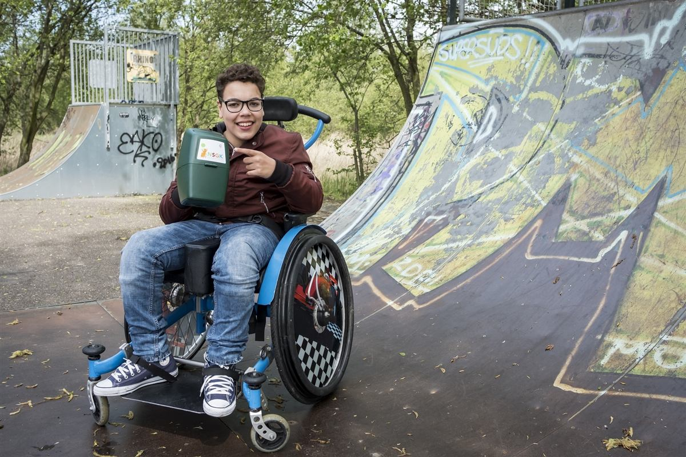
In November is het weer de nationale collecteweek voor het NSGK. Ook wij van ZorgOnderwijsNu zorgen voor collectanten. De helft van de opbrengst gaat naar de ZON-groep.
In de week van 12 t/m 17 november gaan onze collectanten de straat op om zoveel mogelijk geld op te halen. Het geld willen we gebruiken voor het aanschaffen van een nieuwe box. In deze box kunnen onze kinderen samen met de kinderen van het reguliere onderwijs spelen. Dat is onze visie.
Wil je ons helpen met collecteren, meld je aan via mirjam@zorgonderwijsnu.nl
Alvast dank je wel!
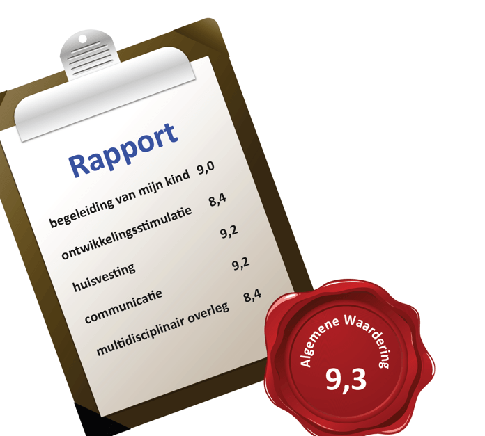
Onlangs is er wederom een enquête geweest onder de ouders van de kinderen van de ZON-groep.
Ouders geven hierin aan dat ze voor ZON gekozen hebben vanwege de locatie en het dagelijks contact met kinderen van de basisschool. Sfeer en uitstraling scoorden hoog. De communicatie door medewerkers, nieuwsbrief en schriftjes worden als fijn ervaren.
Doordat ouders hun kinderen zelf brengen en halen is er elke keer aandacht voor een goede overdracht. De zorg kan op deze manier door de ZON-groep feilloos overgepakt worden van ouders.
De betrokken medewerkers en vrijwilligers van de groep zorgen voor een kwalitatief hoge standaard. We gaan met zijn allen voor ontwikkeling van de kinderen en dat wordt door ouders opgemerkt.
De gemiddelde score van de enquête was zowaar nog hoger dan vorig jaar: een 9,3! Daar zijn we trots op!
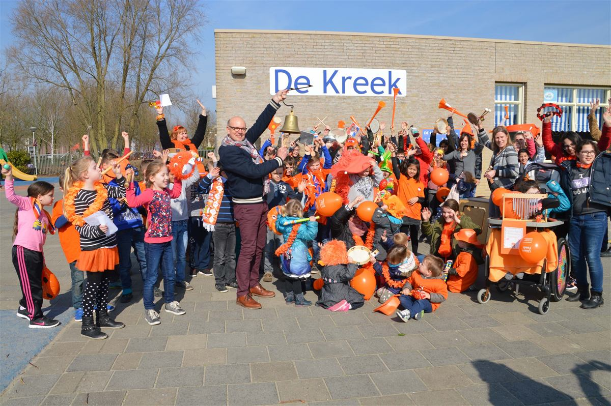
BERGEN OP ZOOM – Liliane Fonds heeft samen met leerlingen van Brede basisschool De Kreek en leerlingen van de ZON-groep, Zorg en Onderwijs Nu, donderdag 10 maart meegedaan met de jaarlijkse actie "Wij trekken aan de bel". Op het schoolplein trokken de leerlingen 1 minuut met veel toeters en bellen aandacht voor het recht op onderwijs van leeftijdgenootjes met een handicap in de wereld die niet naar school kunnen.
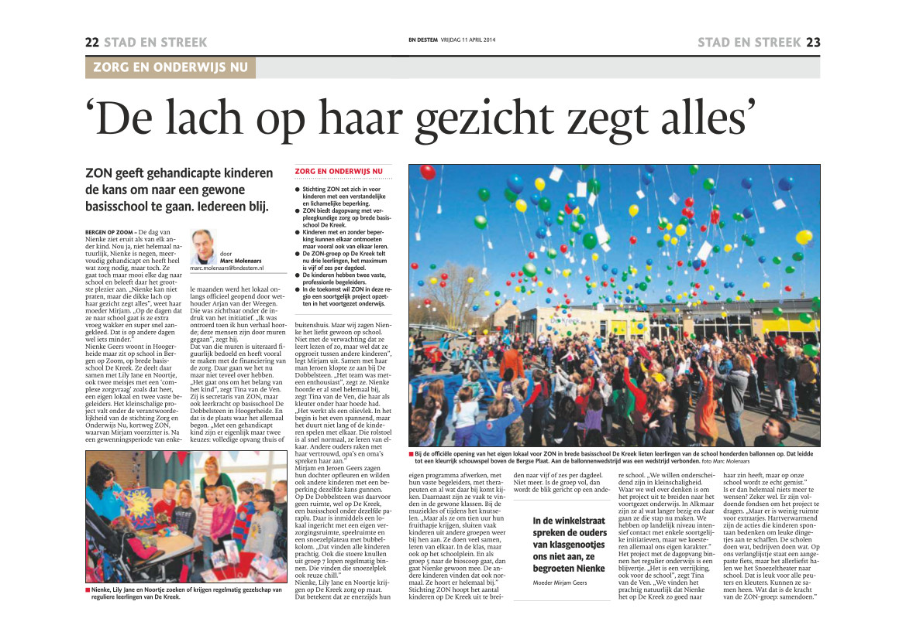
BN De Stem heeft een artikel over ons initiatief geschreven n.a.v. hun aanwezigheid bij de opening op 12 maart.
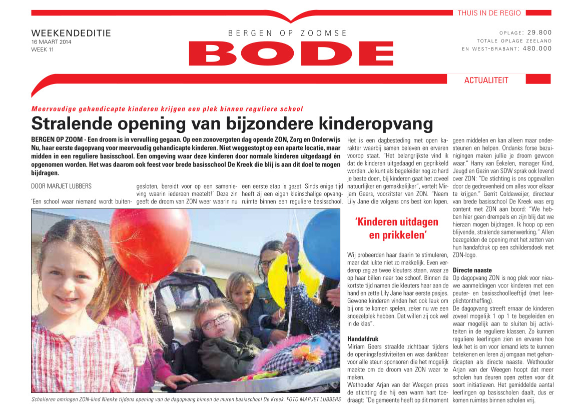
12 maart 2014 hebben we de ZON-groep officieel geopend in bijzijn van de gemeente Bergen op Zoom, SDW, NSGK, De Kreek, en nog vele anderen… Het was een geweldig feest, met in het bijzonder het oplaten van 300 ballonnen met alle kinderen van de ZON-groep en de Brede Basisschool De Kreek. De media heeft er een artikel over geschreven.
In 2013 zijn we doorgedrongen tot de finale van de Kroonappels in de categorie Jeugd. In het kader van de Kroonappels, zijn er korte films gemaakt van alle finalisten. Meer informatie over onze deelname aan de Kroonappels is ook te zien op de Kroonappels-website. We hebben daarmee ook de lokale media bereikt. Zo was er een artikel in BN DeStem en zelfs een uitgebreid interview op ZuidWestTV. We zullen ook in de provincie te zien zijn op de tentoonstelling die door het land trekt.